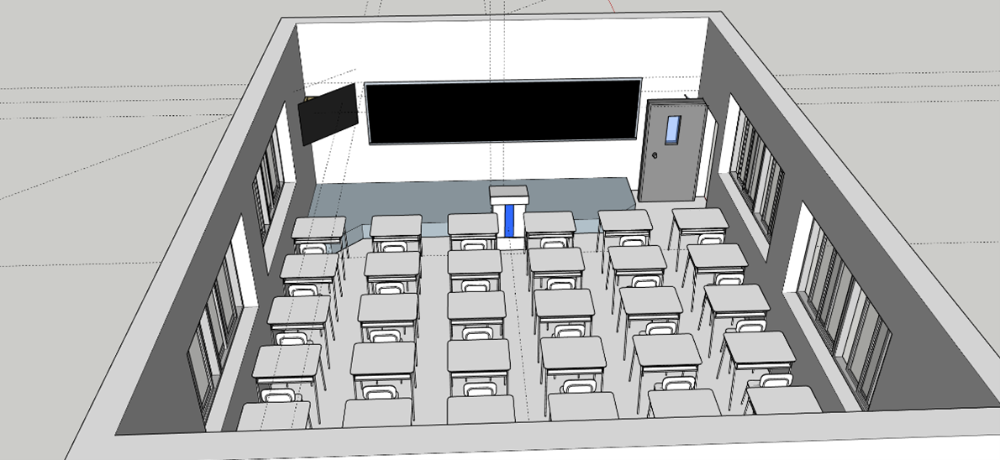

Project | 2024
教室场景研究
Classroom Environment Study
一个以教室为基础场景的空间设计实验，通过不同镜头和主题化变体测试同一环境的叙事气氛。
A spatial design experiment that uses a classroom as the base environment and tests how different views and themed variants can shift narrative atmosphere.
Overview | 项目简介
从目录中的 .skp、.ssg 文件和多张渲染图来看，这个项目围绕一个教室空间展开，不仅建立了基础模型，也尝试了不同主题和构图方式。它更像一个环境研究与场景演绎练习，而不是单纯的静态建模展示。
Based on the .skp, .ssg, and rendered images in the folder, this project centers on a classroom environment that is not only modeled once but also revisited through multiple themes and compositions. It reads as an environment study and scene interpretation exercise rather than a single static model.
Process | 过程
classroom_clouds、classroom_disco、classroom_relic 这些文件名说明该项目在同一空间基础上尝试了多种气氛变体。对设计过程而言，这种方法有助于比较灯光、材质和布景变化如何影响观者对场景的情绪判断。
The filenames classroom_clouds, classroom_disco, and classroom_relic suggest that the same environment was reworked through multiple atmospheric directions. As a process, this is useful because it compares how lighting, material shifts, and scenic interventions change the emotional reading of the room.
Media | 图像与成果

